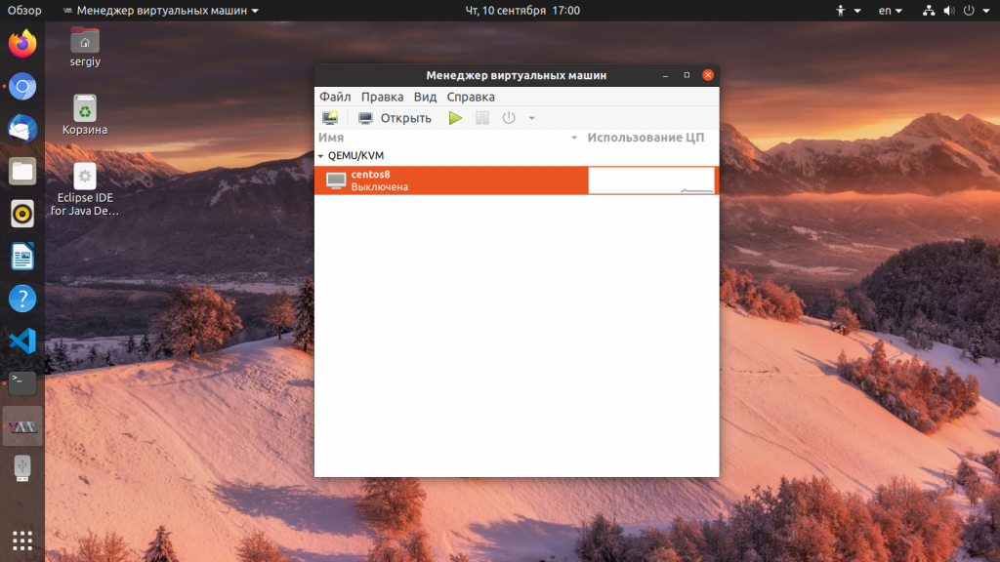

Установка KVM в Ubuntu
Инструкции Обновлено: 10 сентября, 2020 14 admin
KVM или Kernel Virtual Module - это модуль виртуализации для ядра Linux, который позволяет превратить ваш компьютер в гипервизор для управления виртуальными машинами. Этот модуль работает на уровне ядра и поддерживает такие технологии аппаратного ускорения, как Intel VT и AMD SVM.
Само по себе программное обеспечение KVM в пространстве пользователя ничего не виртуализирует. Вместо этого, оно использует файл /dev/kvm для настройки виртуальных адресных пространств для гостевой машины в ядре. Каждая гостевая машина будет иметь свою видеокарту, сетевую и звуковую карту, жесткий диск и другое оборудование.
Также у гостевой системы не будет доступа к компонентам реальной операционной системы. Виртуальная машина выполняется в полностью изолированном пространстве. Вы можете использовать KVM как в системе с графическим интерфейсом, так и на серверах. В этой статье мы рассмотрим как выполняется установка KVM в Ubuntu 20.04.
Перед тем как переходить к самой установке KVM нужно проверить поддерживает ли ваш процессор аппаратное ускорение виртуализации от Intel-VT или AMD-V. Для этого выполните такую команду:
egrep -c '(vmx|svm)' /proc/cpuinfo
Если в результате будет возвращено 0 - значит ваш процессор не поддерживает аппаратной виртуализации, если 1 или больше - то вы можете использовать KVM на своей машине.
Теперь мы можем перейти к установке KVM, набор программ можно получить прямо из официальных репозиториев:
sudo apt install qemu qemu-kvm libvirt-daemon libvirt-clients bridge-utils virt-manager
Мы установили не только утилиту kvm, но и библиотеку libvirt, а также менеджер виртуальных машин. После того, как установка будет завершена вам необходимо добавить своего пользователя в группу libvirt, потому что только root и пользователи этой группы могут использовать виртуальные машины KVM:
sudo gpasswd -a $USER libvirt
Затем убедитесь, что сервис libvirt запущен и работает:
sudo systemctl status libvirtd
После выполнения этой команды выйдите из системы и войдите снова. Далее, давайте проверим все ли правильно было установлено. Для этого используйте команду kvm-ok:
kvm-ok
Если все было сделано правильно, то вы увидите такое же сообщение.
Вы справились с задачей установить KVM в Ubuntu, но вы еще не можете использовать эту среду виртуализации но ее нужно еще настроить. Далее, мы рассмотрим как выполняется настройка KVM в Ubuntu. Что удобно, в новых версиях сеть уже настроена и вам не нужно создавать новый сетевой мост. Вы можете убедится в этом выполнив команду:
ip link
Интерфейсы virbr0 и virbr-nic созданы KVM по умолчанию и они полностью реализуют все необходимые возможности сети. Ещё вы можете посмотреть доступные мосты с помощью команды:
sudo brctl show
Создание виртуальных машин KVM
Настройка KVM Ubuntu завершена и теперь мы можем перейти к ее использованию. Сначала давайте просмотрим список уже существующих виртуальных машин:
virsh -c qemu:///system list
Он пуст. Создать виртуальную машину можно через терминал или в графическом интерфейсе. Для создания через терминал используйте команду virt-install. Сначала перейдем в папку libvirt:
cd /var/lib/libvirt/boot/
Для установки CentOS команда будет выглядеть вот так:
sudo virt-install \
--virt-type=kvm \
--name centos8 \
--ram 2048 \
--vcpus=2 \
--os-variant=rhl8.0 \
--hvm \
--cdrom=/var/lib/libvirt/boot/CentOS-8.iso \
--network=bridge:virbr0,model=virtio \
--graphics vnc \
--disk path=/var/lib/libvirt/images/centos7.qcow2,size=40,bus=virtio,format=qcow2
Разберем подробнее что означают параметры этой команды:
После завершения установки виртуальной машины вы можете узнать параметры подключения по VNC с помощью команды:
sudo virsh vncdisplay centos8
Теперь вы можете ввести полученные данные в вашем клиенте VNC и подключится к виртуальной машине даже удаленно. Для Debian команда будет немного отличаться, но все выглядит похожим образом:
Переходим в папку для образов:
cd /var/lib/libvirt/boot/
Можно скачать установочный образ из интернета если это необходимо:
sudo wget https://mirrors.kernel.org/debian-cd/current/amd64/iso-dvd/debian-8.5.0-amd64-DVD-1.iso
Затем создадим виртуальную машину:
sudo virt-install \
--virt-type=kvm \
--name=debina8 \
--ram=2048 \
--vcpus=2 \
--os-variant=debian8 \
--hvm \
--cdrom=/var/lib/libvirt/boot/debian-8.5.0-amd64-DVD-1.iso \
--network=bridge=bridge0,model=virtio \
--graphics vnc \
--disk path=/var/lib/libvirt/images/debian8.qcow2,size=40,bus=virtio,format=qcow2
Теперь снова посмотрим список доступных машин:
virsh -c qemu:///system list
Для запуска виртуальной машины можно использовать команду:
sudo virsh start имя_машины
Для остановки:
sudo virsh shutdown имя_машины
Для перевода в режим сна:
sudo virsh suspend имя_машины
Для перезагрузки:
sudo virsh reboot имя_машины
Сброс:
sudo virsh reset имя_машины
Для полного удаления виртуальной машины:
sudo virsh destroy имя_машины
Создание виртуальных машин в GUI
Если у вас есть доступ к графическому интерфейсу то нет никакой необходимости использовать терминал, вы можете применить полноценный графический интерфейс менеджера виртуальных машин Virtual Manager. Программу можно запустить из главного меню:

Для создания новой машины кликните по иконке со значком монитора. Дальше вам будет необходимо выбрать образ ISO вашей системы. Также можно использовать реальный CD/DVD привод:
Если вы выбрали ISO образ, то надо его открыть из файловой системы:
На следующем экране выберите количество памяти, которая будет доступна для виртуальной машины, а также количество ядер процессора:
На этом экране вам нужно выбрать размер жесткого диска, который будет доступен в вашей машине:
На последнем шаге мастера вам предстоит проверить правильность настроек машины, а также ввести ее имя. Также нужно указать сетевой мост, через который машина будет подключаться к сети:
Затем автоматически запустится установка:
После этого машина будет готова к использованию и появится в списке. Вы можете запустить ее с помощью зеленого треугольника на панели инструментов менеджера.
В этой статье мы рассмотрели как выполняется установка KVM Ubuntu 16.04, разобрали как полностью подготовить эту среду к работе, а также как создать виртуальные машины и использовать их. Если у вас остались вопросы, спрашивайте в комментариях!
На завершение лекция от яндекса о том что такое виртуализация в Linux: